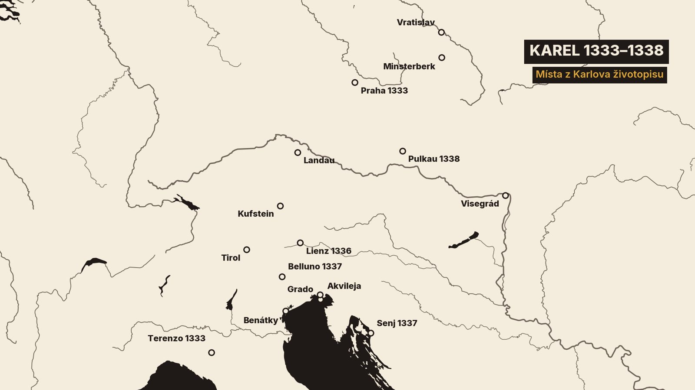
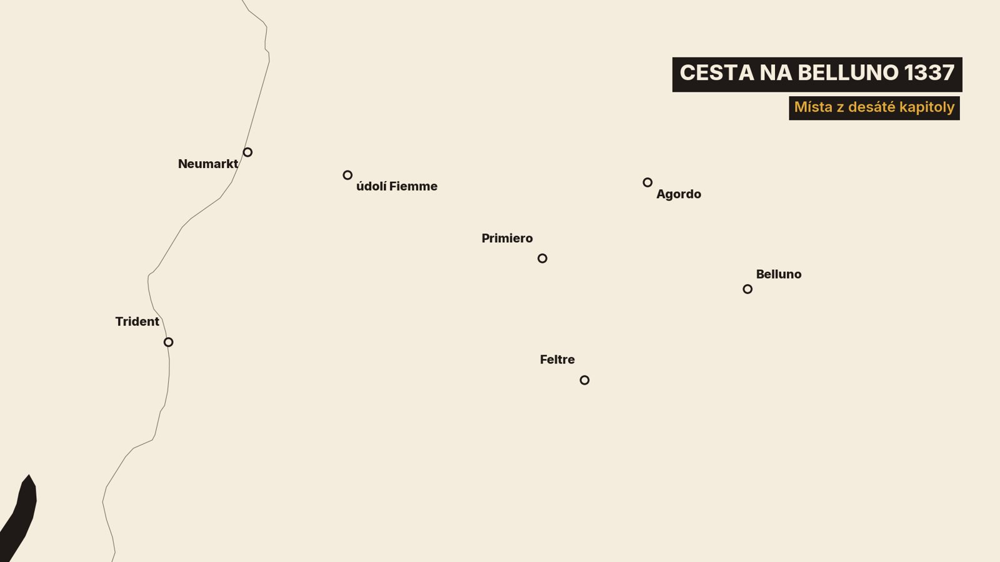

0. Kde jsme skončili
Když jsme začali usínat, něco, nevím co, začalo chodit po komnatě, takže jsme se oba probudili.
Ten pohár hodil, nevíme kdo, přes Buškovu postel z jednoho kouta komnaty do druhého, na stěnu. Od stěny se odrazil a spadl doprostřed komnaty.
1. Kde jsme skončili
Tohle je druhý díl Karlova vlastního životopisu. V prvním jsme Karla opustili v roce 1333 v Itálii. Bylo mu sedmnáct a měl za sebou otravu v Pavii, první bitvu a dva roky války v Itálii.[1]
Dnes přečteme kapitoly sedm až deset. Karel v nich vypráví o snu v italské vsi Terenzo, o návratu do Čech, o letech v Tyrolsku a o útěku před Benátčany. Dojde až ke kobylkám v roce 1338.[1]

Text je pořád náš vlastní překlad z Karlovy latiny, celý a bez zkracování. Kde je potřeba něco vysvětlit nebo kde jiné prameny říkají něco jiného, ozve se komentář.
A teď už má slovo Karel.
2. Sen v Terenzu
V době, kdy jsem byl v Lucce, mě pokoušel ďábel. On vždy hledá, koho by pohltil, a nabízí lidem sladkosti, v nichž se skrývá žluč. Pokoušel mě už dlouho předtím, ale s pomocí Boží milosti mě nepřemohl.
Když to nedokázal sám, poštval špatné a zvrácené lidi, kteří se každý den drželi u mého otce. Ti mě měli svést z přímé cesty do osidla bídy a chlípnosti. A tak jsem byl zvrácenými sveden a byl jsem zvrácený se zvrácenými.
Karel tu přiznává, že se v Lucce dal svést k hříšnému životu. Víc neprozradí.[1]
Nedlouho potom se otec vydal na cestu k Parmě a já s ním. Přijeli jsme do vesnice jménem Terenzo v parmské diecézi. Byla neděle, 15. srpna, svátek Nanebevzetí Panny Marie.
Terenzo je vesnice pod Apeninami, asi třicet kilometrů jihozápadně od Parmy. Psal se rok 1333 a Karlovi bylo sedmnáct.[1][2][6]
Té noci, když mě přemohl spánek, měl jsem vidění. Anděl Páně stál vedle mě po levé straně, kde jsem ležel, udeřil mě do boku a řekl: „Vstaň a pojď s námi.“ Odpověděl jsem v duchu: „Pane, nevím kam, ani jak bych s vámi šel.“
Uchopil mě za vlasy nad čelem a vynesl mě s sebou do vzduchu. Nesl mě až nad velký šik obrněných jezdců, kteří stáli před jedním hradem připraveni k boji. Držel mě ve vzduchu nad tím šikem a řekl mi: „Pohleď a viz.“
A hle, z nebe sestupoval druhý anděl s ohnivým mečem v ruce. Udeřil jednoho muže uprostřed šiku a tím mečem mu uťal pohlavní úd. Ten muž seděl dál na koni, ale smrtelně raněný už umíral.
Anděl, který mě držel za vlasy, se zeptal: „Znáš toho, koho anděl udeřil a zranil k smrti?“ Odpověděl jsem: „Pane, neznám ho a nevím ani, kde to místo je.“
Anděl řekl: „Věz, že je to dauphin z Vienne. Bůh ho takto ztrestal za hřích smilstva. Nuže, varujte se toho. A svému otci můžete říct, ať se varuje podobných hříchů, jinak vás potká něco horšího.“
Litoval jsem toho dauphina z Vienne, jménem Guigo. Jeho babička byla sestrou mé babičky a on sám byl synem sestry uherského krále Karla I. Zeptal jsem se anděla, zda se bude moci před smrtí vyzpovídat, a byl jsem velmi zarmoucen.
Anděl odpověděl: „Vyzpovídá se a bude žít ještě několik dní.“
Tu jsem uviděl po levé straně šiku mnoho mužů v bílých pláštích. Vypadali jako muži velké vážnosti a svatosti. Hleděli na šik a na to, co se stalo, a rozmlouvali spolu. Dobře jsem si je prohlédl.
Nebyla mi však dána milost, abych se zeptal, a ani anděl sám od sebe neřekl, kdo ti muži tak velké vážnosti jsou a jací jsou. Náhle jsem byl vrácen na své místo. Už svítalo.
Tu přišel Tomáš z Nové Vsi, rytíř z lutyšské diecéze a komorník mého otce, a probudil mě: „Pane, proč nevstáváte? Váš otec už je připraven a nasedá na koně.“
Vstal jsem, ale byl jsem jako zlámaný a unavený, jako po velké námaze na cestě. Řekl jsem mu: „Kam bychom jeli? Této noci jsem toho tolik vytrpěl, že nevím, co si počít.“ On se zeptal: „Pane, co se stalo?“
Odpověděl jsem mu: „Dauphin je mrtev. Můj otec chce sebrat vojsko a táhnout na pomoc dauphinovi, který válčí s hrabětem savojským. Naše pomoc mu ale nebude k ničemu, protože je mrtev.“
Tomáš se mi vysmál. A toho dne, kdy jsme přijeli do Parmy, řekl mému otci všechno, co jsem mu pověděl. Otec si mě zavolal a zeptal se, jestli je to pravda a jestli jsem to tak viděl. Odpověděl jsem: „Ano, pane. A vězte zcela jistě, že dauphin je mrtev.“
Otec mě pokáral a řekl: „Nevěř snům.“ Otci ani Tomášovi jsem však neřekl všechno, co jsem viděl, jen to, že dauphin zemřel.
Po několika dnech přišel posel s listy. Psalo se v nich, že dauphin sebral vojsko a přitáhl před jeden hrad hraběte savojského. Tam ho uprostřed všech jeho rytířů zasáhla velká střela z kuše. Po několika dnech se vyzpovídal a zemřel.
Když otec ty listy vyslechl, řekl: „Velmi se tomu divíme, protože náš syn nám jeho smrt předpověděl.“ On i Tomáš se tomu velmi divili. Potom už s nimi o té věci nikdo nemluvil.
To vidění známe jen od Karla. A má to háček. Podle editora pramene zemřel dauphin Guigo už v červenci, tedy dřív, než Karel svůj sen datuje.[1]
Parmská městská kronika přitom potvrzuje, že otec a syn byli v polovině srpna opravdu v Parmě.[6]
3. Návrat do Čech
Potom otec viděl, že mu docházejí peníze a že válku proti zmíněným lombardským pánům už déle nevydrží. Pomýšlel na odchod a chtěl ta města i válku svěřit mně. Já jsem to však odmítl, protože jsem je nemohl se ctí udržet.
Tehdy mi dal svolení odejít a poslal mě napřed do Čech. S nepřáteli jsme uzavřeli příměří a jeli jsme přes mantovské území do Verony a odtud do hrabství Tyrolského.
Tam jsem našel svého bratra Jana. Otec ho oženil s dcerou vévody korutanského, hraběte tyrolského. Ten vévoda, tchán mého bratra, měl dříve za ženu sestru mé matky Annu, jak bylo napsáno výše.
Po její smrti si vzal sestru vévody brunšvického a s ní měl tu dceru, jménem Markéta. S ní dal mému bratrovi také vévodství Korutany a hrabství Tyrolské, které měl po jeho smrti dostat. Neměl totiž mužského potomka.
Tím byl uzavřen mír mezi ním a mým otcem. Předtím byli nepřáteli, protože otec toho vévodu vyhnal z Čech, jak bylo napsáno výše.
Potom jsme jeli přes Bavorsko. Tam jsem našel svou starší sestru Markétu, která měla s Jindřichem, vévodou bavorským, jediného syna Jana.
Potom jsem přijel do Čech, kde jsem nebyl jedenáct let. Zjistil jsem, že má matka Eliška zemřela už před několika lety.
Ještě za jejího života poslali mou druhou sestru, její dceru Jitku, do Francie. Provdali ji za Jana, prvorozeného syna francouzského krále Filipa, jehož sestru Blanku jsem měl za ženu. Třetí a nejmladší sestra Anna byla v té době u ní ve Francii.
Když jsem tedy přišel do Čech, nenašel jsem otce ani matku, ani bratra, ani sestry, ani nikoho známého. Také češtinu jsem úplně zapomněl. Potom jsem se ji znovu naučil, takže jsem mluvil a rozuměl jako kterýkoli jiný Čech.
Do Prahy přijel Karel 30. října 1333. Cestou se podle zbraslavského kronikáře zastavil u hrobu své matky ve Zbraslavském klášteře.[1][3]
Z Boží milosti jsem uměl mluvit, psát a číst nejen česky, ale i francouzsky, lombardsky, německy a latinsky. Každý z těch jazyků mi k psaní, čtení, mluvení i porozumění sloužil stejně dobře jako ostatní.
Lombardsky tu znamená italsky. Že Karel uměl francouzsky, italsky, německy a latinsky, zapsal i zbraslavský kronikář.[1][3]
Otec tehdy odjel do hrabství Lucemburského kvůli válce, kterou on a jeho spojenci vedli s vévodou brabantským. Spojenci byli biskup lutyšský, markrabě z Jülichu, hrabě z Geldern a mnoho dalších. Po dobu své nepřítomnosti mi otec svěřil svou moc v Čechách.
To království jsem našel tak zpustlé, že jsem nenašel jediný hrad, který by nebyl zastavený i se všemi královskými statky. Neměl jsem kde bydlet, leda v domech ve městech jako kterýkoli jiný měšťan.
Zbraslavský kronikář to potvrzuje. Otec dával hrady šlechticům do zástavy, tedy jako záruku za půjčené peníze, a s nimi i města, vsi a lesy. Karel pak asi dva měsíce bydlel na Starém Městě v domě po své matce.[3]
Pražský hrad byl tak zpustlý, zničený a rozbořený, že od dob krále Otakara ležel celý až k zemi. Dal jsem tam s velkými náklady postavit nový velký a krásný palác, jak to dnes vidí každý, kdo se podívá.
Královské budovy na Hradě podle zbraslavského kronikáře vyhořely asi třicet let předtím a od té doby stály pusté.[3]
Karlův velký sál se v jistém smyslu dochoval. Když o půldruhého století později vznikal na jeho místě Vladislavský sál, stavitel ponechal tři obvodové zdi Karlova sálu.[11]
V té době jsem poslal pro svou ženu, protože byla ještě v Lucemburku. Když přijela, porodila po roce prvorozenou dceru jménem Markéta.
Tehdy mi otec dal také Moravské markrabství a já jsem užíval jeho titulu. Obec čestných mužů v Čechách viděla, že pocházím ze starého rodu českých králů. Měli mě rádi, a proto mi pomohli získat zpět hrady a královské statky.
Markrabětem moravským se Karel stal na přelomu let 1333 a 1334. Podle zbraslavského kronikáře chtěl otec zůstat jediným králem a nechtěl, aby se mu říkalo starý král.[1][3]
S velkými náklady a námahou jsem tehdy získal zpět hrady Křivoklát, Týřov, Lichtenburk, Lutice, Hradec, Písek, Nečtiny, Zbiroh, Tachov a Trutnov v Čechách. Na Moravě pak Lukov, Telč, Veveří a hrady v Olomouci, Brně a Znojmě. A k tomu mnoho dalších statků, které byly zastavené a odcizené království.
Peníze na to podle zbraslavského kronikáře sháněl, kde mohl, a větší část posílal otci na jeho války.[3]
Měl jsem mnoho pohotových vojenských služebníků a království den ode dne vzkvétalo. Dobří lidé mě měli rádi a zlí se ze strachu varovali zlého. Spravedlnost v království dostatečně vládla.
Páni se totiž předtím z větší části stali tyrany. Nebáli se krále, jak se slušelo, protože si království rozdělili mezi sebe. Takto jsem dva roky držel správu království a den ode dne ho zlepšoval.
V té době jsem dal svou mladší sestru Annu za ženu Otovi, vévodovi rakouskému. A v těch dnech zemřel vévoda korutanský, tchán mého bratra.
Po jeho smrti se měl můj bratr ujmout vévodství Korutany a hrabství Tyrolského. Tehdy však Ludvík, který se vydával za císaře, uzavřel tajný a lstivý spolek s rakouskými vévody Albrechtem a Otou, že si panství mého bratra rozdělí. Ludvík chtěl hrabství Tyrolské a vévodové Korutany.
Ludvík tak nevděčně zapomněl na služby, které mu můj otec prokázal, když získával císařství, jak bylo napsáno výše.
Rakouský vévoda měl sice za ženu mou sestru, ale hned po smrti korutanského vévody se tajně spikl s pánem z Aufensteinu, který byl za korutanského vévodu hejtmanem celých Korutan. Rakouský vévoda a jeho bratr tak hned získali Korutany. Pán z Aufensteinu jim je dobrovolně vydal a uvedl je do jejich držení.
Tak můj bratr ztratil vévodství Korutany. Lidé z hrabství Tyrolského se však Ludvíkovi nechtěli podřídit a zůstali poslušni mého bratra.
Potom přijel otec do Čech a přivezl s sebou svou manželku, kterou si vzal za královnu. Jmenovala se Beatrix a byla dcerou vévody bourbonského, z rodu francouzských králů. Později s ní měl jediného syna, Václava.
Tehdy proti mně u otce zesílili zlí a falešní rádci, Češi i lidé z hrabství Lucemburského, kteří hleděli na vlastní zisk. Přistoupili k otci a namlouvali mu: „Pane, mějte se na pozoru! Váš syn má v království mnoho hradů a velkou družinu z vašich lidí. Když to tak potrvá dlouho, vyžene vás, kdykoli bude chtít. Vždyť je dědicem království, pochází z rodu českých králů a Češi ho velmi milují. Vy jste tu však cizinec.“
Staročeský překlad má na tomto místě „král přišlý“, tedy přistěhovalec. Jan pocházel z Lucemburska a do Čech se přiženil. Celý spor ale známe hlavně od Karla a ten v něm byl stranou.[1][4]
To říkali, protože hledali vlastní zisk a postavení: chtěli, aby jim svěřil ty hrady a statky. Otec jejich radám natolik uvěřil, že mi přestal důvěřovat. Proto mi vzal všechny hrady i správu v Čechách a v Moravském markrabství. Zůstal mi jen holý titul markraběte moravského.
V té době jsem jednoho dne jel z Křivoklátu do Prahy. Chtěl jsem odtud zamířit k otci, který byl na Moravě. Na Pražský hrad jsem dorazil pozdě a šel jsem do starého purkrabského domu, kde jsem několik let bydlel, než byl postaven velký palác.
V noci jsem si lehl do postele a Bušek z Vilhartic starší do druhé postele přede mnou. V komnatě hořel velký oheň, protože byla zima, a hořelo i mnoho svící, takže bylo dost světla. Dveře i okna byly zavřené.
Když jsme začali usínat, něco, nevím co, začalo chodit po komnatě, takže jsme se oba probudili. Řekl jsem Buškovi, ať vstane a podívá se, co to je. Vstal, obešel komnatu a hledal, ale nic neviděl a nic nenašel.
Pak rozdělal větší oheň a zapálil víc svící. Šel k pohárům, které stály plné vína na lavicích, napil se a postavil jeden pohár vedle velké hořící svíce. Když se napil, znovu si lehl.
Já jsem si přes sebe přehodil plášť, seděl jsem na posteli a poslouchal jsem, jak někdo chodí. Vidět jsem však nikoho nemohl. Spolu s Buškem jsme se dívali na poháry a svíce. Tu jsme uviděli, jak byl pohár vymrštěn.
Ten pohár hodil, nevíme kdo, přes Buškovu postel z jednoho kouta komnaty do druhého, na stěnu. Od stěny se odrazil a spadl doprostřed komnaty.
Když jsme to viděli, velmi jsme se vyděsili. Pořád jsme slyšeli, jak někdo chodí po komnatě, ale nikoho jsme neviděli. Pak jsme se poznamenali svatým křížem a ve jménu Kristově jsme spali až do rána.
Ráno jsme vstali a našli jsme pohár uprostřed komnaty, tam, kam byl hozen. Ukázali jsme ho svým lidem, kteří k nám ráno přišli.
V té době mě otec poslal s pěkným vojskem proti slezskému vévodovi Bolkovi, pánu minsterberskému. Ten vévoda totiž nebyl knížetem ani vazalem mého otce a Českého království.
Otec však už předtím získal město Vratislav od Jindřicha VII., vévody vratislavského, který neměl dědiců. Ten vévoda dostal od otce doživotně darem Kladsko. Raději chtěl Vratislav a své vévodství navždy připojit k mému otci a ke koruně Českého království, než je přenechat svému bratru Boleslavovi. Byli totiž navzájem nepřáteli.
Když se otec ujal Vratislavi, podřídili se všichni vévodové slezští a opolští navždy jeho vládě a koruně Českého království, aby je čeští králové chránili a bránili. Výjimkou byl slezský vévoda, pán svídnický, a Bolek, pán minsterberský.
Bolkovu zemi jsme zpustošili, jak je psáno v kronice. Byla tak zpustošená, že byl donucen smlouvou stát se vazalem mého otce a koruny Českého království jako ostatní vévodové.
Potom jsem se vydal do Uher za otcem. Našel jsem ho ve Visegrádu na Dunaji u krále Karla I. Ten měl předtím za ženu sestru mého otce. Po její smrti si vzal sestru krakovského krále Kazimíra a měl s ní tři syny: prvorozeného Ludvíka, druhého Ondřeje a třetího Štěpána.
Tam král Karel sjednal mír mezi mým otcem a krakovským králem. Otec se zřekl práva, které mu náleželo v Dolním Polsku, totiž v Hnězdensku, Kališsku a dalších krajích Dolního Polska.
Krakovský král se pak za sebe i za své nástupce, krále Dolního Polska, navždy zřekl ve prospěch mého otce a Českého království všech nároků na slezská a opolská vévodství a na město Vratislav.
Předtím totiž mezi nimi byl spor. Můj děd Václav II., český král, držel to Dolní Polsko s vévodstvími krakovským a sandoměřským. Získal je díky jediné dceři Přemysla, krále Dolního Polska a vévody krakovského a sandoměřského, kterou si vzal za ženu. Ten Přemysl odkázal po své smrti mému dědovi a koruně Českého království navždy jak království, tak vévodství.
Zmíněný Kazimír byl strýcem té paní. Tvrdil, že má na Dolní Polsko právo, protože žena prý nemůže v království dědit. Proto se dlouho vedla válka mezi českými králi a Kazimírem i jeho zesnulým otcem Vladislavem, králi krakovskými neboli Dolního Polska.
Dolním Polskem Karel myslí polské království. Jan se tehdy vzdal nároků na polskou korunu a polský král Kazimír se na oplátku zřekl nároků na Slezsko.[1][4]
Tu válku tedy urovnal zmíněný uherský král. Proto se spojil s mým otcem a slíbil mu pomoc proti rakouskému vévodovi, který bratrovi vzal Korutany, a proti zmíněnému Ludvíkovi. V tom spolku byli můj otec, uherský král a bavorský vévoda Jindřich, který měl za ženu mou sestru.
Ve stejné době mě otec poslal do hrabství Tyrolského, abych ho spravoval a staral se o bratra a jeho ženu, protože oba byli ještě děti. Jel jsem tam a ujal se toho, jak mi otec svěřil. Zemané toho hrabství mě přijali za správce své země.
Bratrovi Janu Jindřichovi bylo tehdy asi čtrnáct let. Jeho žena Markéta byla dědičkou Tyrolska a Korutan po svém otci, korutanském vévodovi.[1][2][7]
4. Tyrolsko a útěk před Benátčany
Po nějaké době, den po Velikonocích, jsme sebrali vojsko z hrabství Tyrolského a vtáhli jsme do údolí Pustertal v brixenské diecézi proti hraběti gorickému. Dobyli jsme hrad na hoře svatého Lamberta.
Je jaro roku 1336 a Karlovi je devatenáct. Válka se vede o dědictví po korutanském vévodovi. Korutany už drží rakouští vévodové a Tyrolsko chce císař Ludvík Bavor.[1][7][8]
Táhli jsme dál proti tomu hraběti a pustošili jeho země až k soutěsce, které se říká Lienz. S tím vojskem jsme tři týdny pustošili v poli, protože hrabě pomáhal rakouským vévodům, našim nepřátelům.
Den po svátku svatého Jiří mučedníka zahnal můj otec Otu, vévodu rakouského, za Dunaj a dobyl mnoho hradů v Rakousích.
Ludvík, který se vydával za císaře, však rakouským vévodům pomáhal, a s ním celé Německo i vládci lombardských měst. Především Mastino della Scala, vládce Verony, Vicenzy, Padovy, Trevisa, Brescie, Parmy a Luccy.
Ti všichni napadali mě i hrabství Tyrolské, jak jen mohli. Město Trident a celé údolí Adiže byly ve velkém nebezpečí od Lombarďanů. Údolí Innu zase hrozila velká nebezpečí od Švábů i Bavorů. Celé hrabství Tyrolské tak bylo ve velkém nebezpečí téměř ze všech stran.
V té době jsem učinil biskupem tridentským svého kancléře Mikuláše, rodem z Brna. Biskupem brixenským jsem učinil Matouše, kaplana mého bratra. Obě biskupství byla tehdy neobsazená.
Téhož léta vytáhl Ludvík, který se vydával za císaře, s velkým vojskem a se všemi německými knížaty proti Jindřichovi, vévodovi bavorskému. Jindřich byl můj švagr a stál tehdy na naší straně. Rakouský vévoda přitáhl Ludvíkovi na pomoc přes Pasov.
Můj otec přitáhl Jindřichovi na pomoc a utábořili se u jednoho potoka nedaleko Landau. Tehdy přitáhl Ludvík s rakouským vévodou a dalšími s velkým vojskem. Kvůli potoku se k nim však nemohli dostat.
Měsíc pustošili Bavorsko. Jindřichovo vojsko bylo sice menší, ale Ludvík a rakouský vévoda se přesto vrátili domů, aniž dosáhli, co chtěli.
V téže době jsem chtěl přijít otci a švagrovi na pomoc z hrabství Tyrolského s velkým množstvím pěších i jezdců. Nemohl jsem však projít přes Kufstein, protože tam byl Ludvíkův syn.
Obléhal jsem ho tam s tím vojskem celou dobu, co ta knížata proti sobě ležela v poli. Když se rozešli, vrátil jsem se do Tyrol.
Potom kolem svátku svatého Michala byl sjednán smír mezi mým otcem a rakouským vévodou. Vévoda vrátil město Znojmo, které mu otec dal jako věno se svou dcerou. Otci dal velkou sumu peněz a mému bratrovi k hrabství Tyrolskému některé hrady u řeky Drávy. Vévodství Korutany si měl ponechat.
Téže zimy jsem jel s otcem do Prus proti Litevcům. Byli tam s námi hrabata Vilém mladší Holandský, hrabě z Bergu, mladý hrabě z Loonu a mnoho dalších hrabat a pánů. Zima však byla tak mírná, že nebyl led. Proto jsme proti Litevcům nemohli vytáhnout a každý se vrátil domů.
Král Jan tam táhl na pomoc Řádu německých rytířů proti pohanským Litevcům. Bez mrazu se ale do jejich země nedalo proniknout.[1][4]
Mezitím mezi Lombarďany vypukla velká válka, kterou jsem vyjednal ještě před odjezdem z Tyrol. Šlo o spolek, který uzavřeli Benátčané, Florenťané, Milánští, Ferrarští, Mantovští, Boloňští a mnozí další proti Mastinovi della Scala, vládci Verony a Padovy. Byl to náš nepřítel, jak je vidět výše.
V dubnu jsem se pak vydal přes Moravu do Rakous a chtěl jsem do Lombardie. Rakouský vévoda mi však nechtěl dát průvod. Nastoupili jsme proto na lodě a pluli jsme k uherskému králi.
Ten nám z Budína dal průvod přes Uhry, Chorvatsko a Dalmácii až do města Senj na mořském břehu. Tam jsme vypluli na moře.
Benátští velitelé se to dozvěděli a chtěli mě zajmout, přestože jsem byl jejich přítel. Obklíčili naši galéru svými galérami, takže naše galéra nemohla nijak uniknout.
Devátého dne jsme dopluli před jejich město Grado. Na radu Bartoloměje, hraběte z Krku a Senje, který byl s námi na galéře, jsem nechal svými lidmi vzkázat: „Hle, páni, víme, že vašim rukám nijak neunikneme. Račte poslat napřed do města a domluvit, jak nás chcete ve městě přijmout.“
Zatímco s nimi naši tak pěkně rozmlouvali, spustil jsem se otvorem v galéře do malé rybářské loďky, spolu s Bartolomějem a Janem z Lipé. Přikryti pytli a sítěmi jsme proklouzli mezi jejich galérami a připluli k břehu mezi rákosím.
Tak jsme jim unikli a šli jsme pěšky až do Akvileje. Oni pak zajali naši galéru s celou mou družinou. Několik dní je drželi v zajetí a pak je propustili.
Celý ten útěk známe jen od Karla. Proč ho Benátčané chtěli zajmout, když byl jejich přítel, Karel nevysvětluje.[1]
V Akvileji jsem se dal poznat svému hostiteli. Ten to hned oznámil městské radě a měšťané to dali vědět patriarchovi. Patriarcha hned přijel do města a s velkou poctou, s duchovenstvem a lidem a za vyzvánění zvonů, mě přijal a uvedl do svého paláce.
Mezitím se ke mně ze zajetí vrátila moje družina. Patriarcha mě s velkou ctí čtyři týdny hostil ve své zemi a uzavřel se mnou spolek. Pak mě doprovodil údolím Cadore až do hrabství Tyrolského, které jsem tehdy spravoval za svého bratra, protože byl ještě malý chlapec.
5. Belluno, Benátky a kobylky
V měsíci červnu oblehli Benátčané, Florenťané, Milánští, Mantovští, Ferrarští a jejich další spojenci město Padovu. Měli obrovské vojsko, asi 10 000 obrněných jezdců a nesčetně pěších. Část jejich vojska oblehla také město Feltre, a to spolu s feltreským biskupem, se Siccem z Caldonazza, s hrabaty ze Seneny a s pány z Camina.
Dlouho stáli v obležení s 500 těžkooděnci a s mnoha pěšími. Padova i Feltre totiž patřily pod panství Mastina della Scaly, pána Verony a dalších měst, která jsem jmenoval výše. Benátčané už předtím dobyli Tunglan, Saraballum a Bassano, která také patřila Mastinovi. A hrabě z Collalta, fojt Trevisa, i mnozí další se proti Mastinovi vzbouřili a přidali se k Benátčanům.
Mastino della Scala, pán Verony, tehdy ovládal celou řadu měst severní Itálie, jak je Karel vyjmenoval v minulé kapitole. Proti němu se spojily Benátky, Florencie a další města.[1]
Tehdy dostal strach jeden měšťan z Belluna, jménem Sudracius z Bongaja. Bál se, že se tak ztratí Feltre, potom i Belluno, a obě padnou do rukou Benátčanů, které zvlášť nenáviděl. Viděl, že je obklíčen ze všech stran.
Proto si vzpomněl na Jakuba Avoscana. Ten se se svými hrady, s Buchensteinem a s některými horskými místy, která patřila k panství Belluna, poddal mé vládě. Na jeho radu přišel ten měšťan ke mně, když jsem byl v Parmě. Přišel tajně, bez vědomí obou stran, Veronských i Benátčanů. Nesměli se to dozvědět Benátčané ani pán Verony, protože jednal proti němu.
Tady je text nejistý. Latinské rukopisy jsou na tomto místě porušené a ani editor pramene neví, co by tu Parma měla znamenat.[1]
Řekl mi: „Kdybyste dokázali porazit nepřátele a zahnat je od Feltre, otevřel bych vám jednu bránu města. Raději to město přeji vám než komukoli jinému.“ Uvážil jsem jeho slova a určil jsem mu den, kdy tajně přijedu.

Lidi jsem musel shromáždit chytře. V okolí Neumarktu nad Adiží se měl konat souboj dvou šlechticů. Pod touto záminkou jsem svolal mnoho šlechty: kdyby přátelé soupeřů vyvolali nějakou roztržku, mohl bych je při souboji ochránit. Nikdo se nesměl dozvědět, proč lidi svolávám, abych mohl tajně táhnout k Feltre.
Vítěze, který v tom souboji zvítězil a druhého zabil, jsem opásal rytířským mečem. Když se to stalo, požádal jsem přítomné rytířstvo, aby se mnou jelo tam, kam chci, aniž by kdokoli věděl kam. Byli hned ochotni a vydali se se mnou na cestu. Celou noc jsme jeli údolím Fiemme.
Druhý den jsem jel pustými horami přes Castrozzu, kudy lidé obvykle nejezdí. Když jsem dojel k lesu mezi Castrozzou a Primierem, nemohl jsem dál, protože cestu zatarasily vyvrácené stromy. Moje vojsko začalo ztrácet naději.
Tehdy jsem šel pěšky s několika pěšáky. Po srázech a po dávno zničených cestách jsme hledali průchod, až jsme se dostali za les. Strážci lesa už dávno odešli, protože slunce zapadalo. Netušili, že by jim tam od někoho mohlo hrozit nebezpečí. Tak jsme si v horách prorazili cestu.
Ostatní šli za námi a přišli jsme k hradu Primiero, který Benátčané také obléhali. Nepřátele jsme zahnali a hrad dobyli. Ti, kdo odtud utekli, přišli ke svým druhům, kteří leželi před Feltre. Řekli jim, že na ně táhne velké vojsko a nevědí čí. Když to uslyšeli, v noci od města odtáhli.
Druhý den jsme z Primiera přejeli do Agorda a z Agorda jsme spěchali k Bellunu. Napřed jsme poslali zprávu Andigetovi, se kterým jsme vyjednávali, že jsme s vojskem blízko města.
Andiget je nejspíš tentýž měšťan z Belluna, kterému Karel předtím říká Sudracius. Editor pramene v něm poznává Endrighetta z Bongaja.[1]
Ten hned zašel za veliteli a správci města. Řekl jim, že k němu přišli poslové: hrabata z Chiaramonte, spojenci jejich pána Mastina della Scaly, prý přijela s velkým vojskem, zahnala nepřátele a jdou jim na pomoc. Radostně otevřeli brány, protože si mysleli, že jsme přátelé.
Vjel jsem do brány na den svatého Prokopa, 4. července. Když všichni vjeli, rozvinul jsem korouhve Českého království a hrabství tyrolského. Měšťané spatřili nepřátele a zůstali jako omráčení. Nevěděli, co dělat, a nemohli naší moci odolat. Tak jsme z Boží milosti získali město.
Bylo to roku 1337. Lest se soubojem a noční cestu přes hory popisuje i kronikář Beneš z Weitmile, ten ale vychází z Karlova vyprávění.[1][2][3]
Hrad se proti nám ještě několik dní držel. Když jsme však posádce pohrozili, vydala nám ho do rukou. Potom jsme se s vojskem položili před Feltre.
Pán Verony měl tehdy dost práce s Benátčany a oni s ním. Proto nám ani našemu vojsku nemohli nijak uškodit. Naopak s námi vyjednávaly obě strany a každá si nás chtěla získat za spojence.
Po šesti týdnech obléhání Feltre jsem se dohodl s Benátčany. Uzavřeli se mnou spojenectví, že mi budou ve válce proti Mastinovi della Scala pomáhat celou svou mocí. Na vlastní náklady mi poslali 700 těžkooděnců a mnoho pěších.
Nechal jsem pak bratra u vojska a jel jsem do Benátek. Tam mě přijali s velkou ctí a prokázali mi velkou úctu. Spojenectví jsme stvrdili. Pak jsem se vrátil a Feltre jsme vyhladověli a dobyli.
Podle editora pramene se Feltre vzdalo koncem srpna 1337.[1]
S námi vyjednávali i páni z Carrary z Padovy. Zmocnili se Padovy, zajali Alberta, Mastinova staršího bratra, a vydali ho Benátčanům do vězení. Zůstali mými služebníky a Padovu si udrželi ve své moci.
Propustil jsem pak své lidi a ve Feltre, v Bellunu a na hradech jsem ustanovil hejtmany. Ve Feltre Volkmara z Burgstallu, šlechtice z hrabství tyrolského, v Bellunu Andigeta z Bongaja. Hejtmanem války proti Veroně jsem ustanovil Jana z Lipé, který sedmý den svého úřadu zemřel. Na jeho místo jsem dosadil Zajíce.
Zajícem Karel podle editora myslí Zbyňka Zajíce z Hasenburku.[1]
Tak jsem se vrátil do hrabství tyrolského, jel jsem údolím Innu a odtud do Českého království. Uzavřel jsem přátelství s rakouskými vévody, protože předtím jsme přáteli nebyli.
Té zimy o masopustu jsem dal svou prvorozenou dceru Markétu Ludvíkovi, prvorozenému synovi uherského krále Karla. Zavázali jsme se, že budeme stát při sobě proti komukoli.
Potom mě švagr pozval na druhý den k obědu. Při východu slunce mě jeden z rytířů probudil a řekl: „Pane, vstaňte, nastal poslední den. Celý svět je plný kobylek.“
Švagrem tu Karel myslí rakouského vévodu Otu, manžela své sestry Anny.[1]
Vstal jsem, vsedl na koně a rychle jsme jeli, protože jsem chtěl vidět, kde končí. Dojeli jsme až do Pulkau, kde byl jejich konec. Do délky se táhly sedm mil, jejich šířku jsme odhadnout nedokázali.
Jejich hlas zněl jako hřmot vřavy. Křídla měly jakoby popsaná černými písmeny. Byly nahuštěné jako sníh, takže pro ně nebylo vidět slunce. Šel z nich velký zápach.
Pak se rozdělily. Jedny letěly k Bavorsku, jiné do Franků, jiné do Lombardie a další sem a tam po celé zemi. Byly velmi plodné: dvě za noc zplodily dvacet i víc. Byly malé, ale rychle rostly, a nacházeli je ještě do třetího roku.
Podle editora přiletěly kobylky koncem července 1338. Zapsal je i kronikář Beneš z Weitmile, a to podle Karlova vyprávění. Jenže trochu jinak: u Vídně a s rojem dlouhým pět mil.[1][3]
V téže době během dvou měsíců zemřeli moje sestra a můj švagr, rakouský vévoda. Od té doby jsem je už nikdy neviděl.
Podle editora zemřela Karlova sestra Anna v listopadu 1338 a vévoda Ota v únoru následujícího roku. Mezi jejich úmrtími tedy uplynuly asi tři a půl měsíce.[1]
6. Co bude dál
Tím Karlovo vyprávění o letech 1333 až 1338 končí. Za pět let se ze sedmnáctiletého prince, který zapomněl česky, stal muž, který spravoval Čechy i Tyrolsko, válčil v Alpách a jednal s Benátkami.[1]
Mezi vojenskými taženími a smlouvami ale Karel zapsal i čtyři podivné příběhy: sen v Terenzu, noc s pohárem na Pražském hradě, útěk pod rybářskými sítěmi a kobylky, které zakryly slunce.[1]
V příštím dílu dočteme Karlův vlastní text. Uslyšíme o setkání s kardinálem Pierrem Rogerem v Avignonu a o spiknutí v Tyrolsku. A potom, už z pera neznámého pokračovatele, o cestě ke koruně římského krále.[1]


,_Count_of_Luxembourg,_King_of_Bohemia,_St_Vitus_Cathedral,_Prague.jpg){kind=link}


.jpg){kind=link}


.jpg){kind=link}


.jpg){kind=link}


.png){kind=link}


.jpg){kind=link}


.jpg){kind=link}


_-_K%C5%99ivokl%C3%A1t_od_V.jpg){kind=link}

_-_V_pohled.jpg){kind=link}
.jpg){kind=link}
;_sdru%C5%BEen%C3%A1_rom%C3%A1nsk%C3%A1_okna.JPG){kind=link}
_Austriacae_gentis_imaginum_(serietitel),_RP-P-1961-831.jpg){kind=link}
,_tab._VIII._-_Jan_Jind%C5%99ich_Lucembursk%C3%BD.jpg){kind=link}
.jpg){kind=link}

_Austriacae_gentis_imaginum_(serietitel),_RP-P-1961-824.jpg){kind=link}


.jpg){kind=link}


.jpg){kind=link}


.png){kind=link}
.png){kind=link}


_01.jpg){kind=link}
.jpg){kind=link}


.jpg){kind=link}


.jpg){kind=link}
.jpg){kind=link}

.jpg){kind=link}


.jpg){kind=link}

,_tab._XIX._-_Bene%C5%A1_Krabice_z_Veitmile.jpg){kind=link}


_(Carrara_Santo_Stefano,_Due_Carrare).jpg){kind=link}
.jpg){kind=link}

_-_Google_Art_Project.jpg){kind=link}


.jpg){kind=link}
Takhle popsal budoucí císař Karel Čtvrtý jednu zimní noc na Pražském hradě. Bylo mu necelých dvacet let.[1][2]